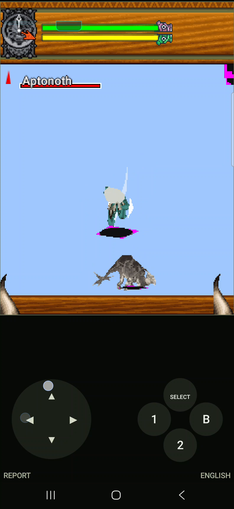

Moving the controls let me see something I might otherwise have missed: the hunter and monsters were there. It looked as though the camera was underneath their world. We had characters, but the floor was a mess. Working through that would also give us a reason to return to Rockman.
“below the map looking up lmao”
“Dude, weve got some actual on screen models happening during hunts. but like, well look at the video, i wouldnt of even realized it if i didnt fuck around with the controls becuase were essentially below the map looking up lmao lets keep goingggg”Wakka · October 3, 2026 M05
The first renderer passes had plenty of game around the missing scene: setup, quest selection, HUD and live hunt logic. A 0.0.4 Figure could arrive with 589 vertices and queue no triangles at all. The decoder was consuming one colored-polygon field in the wrong order, and the depth test could reject an entire polygon because just one vertex crossed a plane.M06M07
Correcting those paths brought the hunter and enemies through. We still had no proper floor. The 0.0.5 investigation records almost 290,000 drawn Figure triangles while terrain was absent or reduced to diagnostic lines. The characters and the world took different routes, and the PrimitiveArray terrain path still ignored the active camera.M08
A camera with two points
Version 0.0.6 gave terrain a projected, camera-aware path. The phone then near-culled every Figure triangle in its current session. One logged model was entirely behind the useful view range. Replacing the diagnostic floor had made the next disagreement measurable.M08M09
The game constructed a camera position and a target position, translated both into world space, and passed them to lookAt. The bridge treated the second point as a direction. The correction was to subtract the camera position from that target before building the view matrix, and to copy the supplied view matrix rather than retain a mutable object.M10
There was a reason the wrong interpretation had looked plausible. A related generic API used a look direction. Monster Hunter’s older DoJa API was being called with a target point. The game’s own call pattern settled which meaning this bridge had to honor.M10
“big improvment! still missing textures and a ways to go but holy shit lets keep rolling. awesome progress dude”Wakka · October 3, 2026 M05
The 0.0.7 report now records more than 218,000 drawn Figure triangles and recognizable models in front of the camera. Around them, the video still had blue emptiness and black or magenta slabs. A good camera answer had made the floor problem easier to see.M11M15

The hunter and Aptonoth are recognizable. The world around them is still mostly blue emptiness, with black and magenta patches.
Open the image for the full original view.
M15Grass, paths, and holes into the sky
The next pass found that PrimitiveArray material bits meant different things from Figure material bits. The bridge had sent them through the same interpretation. Texture coordinates were wrong too: the game supplied texel positions such as 32 and 64, while the bridge treated them as normalized values on a 0–255 scale. Non-power-of-two textures also needed padded backing without stretching their original pixels.M12
Version 0.0.8 brought grass and path pieces into view. Huge holes still opened onto the sky, and some angles produced a black polygon fan across the camera. The report counted thousands of textured primitive calls. Having a texture object was no guarantee that a whole world would hold together.M13M14
Open the preserved 0.0.8 contact sheet: grass and paths, sky holes, and the black fan all turn up in the same recording review.M15
The following notes separated three causes. Draw commands needed to wait for the game’s flush boundary so models and terrain could be depth-sorted together. Crossing triangles needed real clipping instead of having a vertex shoved onto the near plane. Animated texture coordinates needed to stay signed and continuous until sampling, rather than being byte-masked before interpolation.M14
Those became the 0.0.9 repairs. By then, we had something useful to carry to another game: inspect the surfaces and measure the camera boundary before trying another blind flip. Rockman’s mesh pass explicitly names Monster Hunter i 0.0.7 as part of its investigation.R09
Following the diamonds upstream
The recording described in the investigation shows the same problem in Options values, the equipment dialogue and the quest list. Those are different screens sharing a problem earlier in the text path. The original resources use Windows-31J, or CP932. The game builds strings from byte arrays; Android decodes those bytes as UTF-8.M01
By the time the renderer receives the string, the original characters are gone. Drawing a nicer replacement glyph would only decorate the wrong answer. The repair has to happen before the game builds the string.
The adapter works on recognized resources as they inflate in memory. The English and Japanese packages, compressed originals and existing saves stay intact. That sounds reasonably contained until the container turns out to hold more than plain text.M01
A table full of little traps
Some entries are typed tables: numbers, strings, fixed widths and rows whose next field depends on the previous field ending in the right place. Converting CP932 text into UTF-8 can make it longer. A readable sentence would be a poor trade if the next numeric field quietly became part of it.
The recorded adapter therefore expands text-column widths and updates the row stride while copying the numeric cells byte for byte. It only touches a known list of resources. A filename ending in something text-like is not enough; some of those entries are binary tables.M01
We checked the adapted tables with the game’s own unchanged parser from both language editions. It read them back row by row: the counts and numeric values stayed put, and the text came back as the intended Unicode. The recorded samples finally included “Leather Set” and readable Options values. We could test the fix against the parser that actually had to use it.M02
The later text notes still call out a blue void and terrain wedges as a separate renderer investigation. Fixing what a string says does not repair the ground underneath it.
The press you could feel
Later, I accepted the two-thumb portrait layout in 0.1.3 and asked for wider, more forgiving buttons with a press I could feel. The arrangement was starting to make sense. Now I needed to land my thumbs on it comfortably.M03
The 0.1.4 control pass keeps the deck height and the accepted groups. The buttons use more of the available width. A nearby touch can resolve to the closest eligible target, and that contact keeps its action until lift. Sliding across a neighbor cannot quietly turn one held action into another.M03
Fast taps get a brief visible highlight and a standard haptic request. The game’s key still releases immediately. The screen can give a short press enough time to be noticed without making the hunter hold the button longer than the player did.M03
The retained checkpoint also continues the weapon/effect visibility and fractional-animation work. Text, models and thumbs were all getting their own turns at being the next thing to fix.M04
What carried forward
The floor, the text and the controls each took a turn being the next obvious problem. Working through this game gave us better questions to ask when we went back to Rockman. We still had to make the answers fit Rockman’s own renderer, but we finally had somewhere to start.
About these records
The opening owner messages are retrieved conversation excerpts. The 0.0.6–0.0.8 reports and preserved phone images show the changing failures; zero fatal exceptions did not mean zero draw failures or a correct scene. Version 0.0.9’s clipping/flush/UV changes are documented in investigation notes without a corresponding early phone-acceptance report in this set. Later 0.1.2–0.1.4 text and control work remains the separate window described by its receipts; the new 0.1.4 comfort pass still needed phone acceptance. The Rockman connection is documented in Rockman’s own notes, and the games retain distinct rendering paths.
The receipts
Selected report lines, investigation notes and recorded feedback behind the story. Each receipt keeps its source and context.
M01 / Text is decoded before the game can draw itTechnical investigation
Source: Monster Hunter i v0.1.4 / PHONE_TEXT_FIX_v0.1.2.md · selected lines 3–5, 15–21
Owner evidence: `1000098213.mp4` shows replacement diamonds in Options values, the Leather Set dialogue and the quest list. The unchanged phone resources store their text in Windows-31J (CP932). The original game constructs strings with `new String(byte[])` / `new String(byte[], offset, length)`; Android decodes those bytes as UTF-8. Once decoded incorrectly, source characters are lost, so drawing-time character substitutions would be unreliable. This fix adapts recognized resources before the original game builds strings. All original EN/JP JAR/DEX/seed bytes, compressed resource archives and existing scratchpad/save files remain untouched. The adapter operates on newly inflated in-memory byte arrays only. [... selected excerpt ...] The other 18 recognized entries are typed tables consumed by original `a.class`. The first byte is column count. Each column declares a type byte and a width byte. Type 2 is a nul-terminated text field; types 0/1 are signed/unsigned numeric fields. The original parser derives row stride and offsets from these widths. `LegacyTextResources.adapt()` strictly decodes recognized text with Windows-31J and emits UTF-8. Plain resource line endings and ASCII commands stay intact. For recognized typed tables, only type 2 strings are converted; column widths grow when needed, and the row stride changes consistently. Every numeric cell is copied byte-for-byte. Row counts and column types remain the same. Converted widths must fit the original one-byte schema; invalid charset data or schema raises an error and JarInflater retains the original bytes with a complete diagnostic. The allowlist contains only the known 21 names. Unknown entries, model data, image data, audio and arbitrary binary resources bypass adaptation. A `.txt.dat` suffix alone never triggers conversion: many files with that suffix are binary tables. Strict standard Shift_JIS rejects extension characters found in the actual EN dialogue and JP dialogue/manual resources. Windows-31J successfully decodes every source text cell in both payloads. This is why the adapter uses CP932 rather than guessing replacement glyphs.
M02 / Original table parser checks; rendering remains a phone testHost verification
Source: Monster Hunter i v0.1.4 / PHONE_TEXT_FIX_v0.1.2.md · selected lines 27–43
## Independent verification `LegacyTextChecks.java` loads the **unchanged original `a.class` from both EN/JP game JARs** and feeds it original and adapted tables. It checks every row: - Numeric field bytes and values stay identical. - Original row counts and column types stay identical. - The original game's String-returning table method reads the intended CP932 text as correct Unicode from the adapted bytes. - The production JarInflater announces and delivers the actual adapted size/content. - Plain dialogue/manual/UI resource text, CR/LF and commands stay equivalent. - Unsupported names and binary payloads remain untouched. Recorded samples now decode as `≪On≫`, `≪Medium≫`, `≪Leather Set≫`, and `Basics: Raw Meat`. Japanese samples decode as `今日は何のようじゃ？`, `≪あり≫`, `≪ 中 ≫`, and the original Japanese quest title. See `verification/LEGACY_TEXT_CHECKS_v0.1.2.txt`. All title/engine Java sources compile against Android API35. These host tests establish charset/schema/resource behavior; the updated phone render remains a separate owner test. ## Presentation/control observations
M03 / More forgiving targets without longer key holdsControl design notes
Source: Monster Hunter i v0.1.4 / CONTROL_FEEDBACK_v0.1.4.md · selected lines 3–13, 17–21, 33
The owner's0.1.3 phone feedback accepts the two-thumb layout and asks for larger, more forgiving buttons with a press that can be felt. Recording1000098236 shows ordinary hunt attacks, camera turns and native Menu/Items use with the portrait grid. This revision is focused on the standalone title. ## Space and touch ownership The deck remains248dp tall and preserves the accepted rows: Camera left/right, Guard/Special, Sprint/Attack, OK/Center. Movement stays on the left; Menu and Items remain below it. The complete240x320 stage, keypad, native actions, directions, camera, saves and Sprint release rules are retained. Right buttons use the available half-width instead of narrow squares. At411dp width each face is about93×56dp, compared with about54×54dp before. At320dp they are70×56dp;600dp uses140×56dp. The visible column gap is8dp and row gap4dp. Every face stays inside the deck and separate from the other faces. Menu/Items also use wider cells. Normal labels increase to16sp and Attack18sp where available width permits. A new touch may land up to12dp outside a pad/button boundary. The closest boundary owns the touch. Exact distance ties use a fixed order, so a gap has one deterministic owner. Buttons near a neighbor do not claim the neighbor's face. Remote unused space and starts outside the View remain inactive. Ownership is decided on touch-down and retained until lift or cancellation. Dragging over another button or changing a saved native binding while held cannot switch the captured key. A missed touch cannot acquire a button by sliding onto it. Duplicate down events for an existing contact do not repeat input or feedback. Movement continues to update the original non-inverted eight-way mask and neutral deadzone. [... selected excerpt ...] A pressed action has a bright mint face, light border and dark text. The movement pad highlights its border and active directions, and its thumb marker follows the captured touch. A latched Sprint retains its green **ON** state; a momentary Attack remains clearly separate. Fast taps keep a visual highlight for100ms from touch-down so a tap can be seen even if its lift arrives before the next screen draw. Native key-up still occurs immediately on lift. This feedback does not hold keys, repeat events or publish extra game frames. The control View schedules its own short animation redraws and stops them when the flash expires. Cancellation, pause/background and view/keypad changes clear contacts, pad feedback and pending flashes through the existing release-input path. Each accepted new contact requests Android's standard `View.performHapticFeedback(HapticFeedbackConstants.VIRTUAL_KEY)` once. Movement, held buttons, duplicate events and lift do not generate repeated vibration. The one-argument call uses no ignore-setting flags and needs no additional permission. Android handles device support and the user's touch-feedback/View settings, as described in the [official Android haptic feedback documentation](https://developer.android.com/develop/ui/views/haptics/haptic-feedback). Rejected targets and paused/failed input do not request haptics or show a press flash. [... selected excerpt ...] The preview and framework stand-ins establish geometry, input timing and requested feedback behavior. They are not phone screenshots or physical vibration proof. The owner's next ordinary phone play establishes actual comfort and device haptic feel.
M04 / Phone evidence, renderer changes and the 0.1.4 boundaryCheckpoint summary
Source: Monster Hunter i v0.1.4 / README_FIRST.txt · selected lines 7–20
Counters are reported by the retained checkpoint summary; the underlying recording is not reproduced in this edition.
The hunter renderer honors the game's explicit weapon/effect pattern choice after setting its animated posture, instead of forcing the animation's default visibility mask again at draw time. Bone animation remains active; the visual issue was persistent wrong model parts. Exact original guest/model regressions document the actual states and preserve the native DoJa pattern convention. Fractional movement frames now interpolate correctly instead of snapping to the previous integer key. Exact original movement tracks prove the changed poses; integer-frame poses remain identical to the preserved baseline. Portrait layout and safe Sprint behavior remain. Buttons use available space for wider faces and forgiving nearby taps, with clear pressed feedback and standard haptics that respect phone settings. Native keys release immediately; brief visual feedback does not hold an action. Controls keep their original contact until lift, preserving safe movement/attack combinations. Reports identify MONSTER HUNTER i and the installed app version, rather than the shared shell version. New exports use Monster-Hunter-i-v0.1.4-report-<timestamp>-<suffix>.txt. Downloads uses Downloads/MonsterHunteri; Save as and Share use the same game/version filename. Original retained reports remain resolvable and their archived contents stay intact. Tools/exports keep complete counters, current/previous logs and error stacks. PHONE EVIDENCE Latest exact report/video are under verification/phone-v0.1.3. Actual standalone0.1.3 on Samsung SM-S938U Android16/API36 reports792200drawn triangles/0draw failures,246audio starts/0failures,60virtual text resources/0failures and361presses/361releases with no held contacts. Owner says portrait controls finally feel better; footage motivates weapon/effect visibility and touch-feedback work. This is partial phone evidence. Current0.1.4 host/build/original-guest checks do not imply new phone or full-game acceptance. PRESERVED Original EN/JP JAR/DEX/seeds, save paths/update key/package, native non-inverted directions, configurable bindings, full keypad/hardware controls, Sprint lifecycle safety, original gold icon, vector ABI/terrain/camera, CP932 text, material fades/overlays, completed frames, production audio and full diagnostics remain. Four sampled effects remain phone-unvalidated; Android GM approximates original handset instruments. Native12/20FPS pacing/GC are unchanged. No cross-app save migration is implemented. Original0.0.9 and prior0.1.1/0.1.2/0.1.3 source/fingerprints/APKs remain under baseline/. Exact current and cumulative engine deltas are recorded honestly. No Player source is included in this current standalone checkpoint. BUILD / NEXT CHAT Read AGENTS.md, artifact-passport.json, artifact-handoff.json, engine-revision.json and docs/ARCHITECTURE.md. Use Python3/Java17+, API35 android.jar and Linux build-tools35.0.0; set ANDROID_JAR/ANDROID_BUILD_TOOLS. Run tools/build.py, tools/check.py and tools/finalize_handoff.py. This title uses local shared0.1.5 for report workflow; earlier Player shared0.1.4 is deliberately untouched. Keep the private checkpoint with source/tests/evidence/update keys/original payloads. Android9/API28+.
M05 / “were essentially below the map looking up lmao”Conversation excerpts
Source: Wakka / Monster Hunter i development conversation / October 3, 2026 (UTC)
Retrieved owner-message excerpts, retaining original wording. UTC timestamps 05:52:01 and 06:39:23 are converted to Iowa local time. These observations are not relabeled as reactions to a later build.
00:52:01 CDT, October 3 — “Dude, weve got some actual on screen models happening during hunts. but like, well look at the video, i wouldnt of even realized it if i didnt fuck around with the controls becuase were essentially below the map looking up lmao lets keep goingggg” 01:39:23 CDT, October 3 — “big improvment! still missing textures and a ways to go but holy shit lets keep rolling. awesome progress dude”
M06 / 589 vertices arrive, but no triangles make it throughCheckpoint investigation notes
Source: Monster Hunter i preservation / baseline/original/V005_REPORT_AND_RENDER_NOTES.txt · selected lines 3–7
REAL-DEVICE INPUT FOR THIS PASS - Samsung SM-S938U / Android 16. - v0.0.4 reaches live game state and draws the working 2D HUD/dialog layer. - v0.0.4 decodes model textures and submits Figure data, but the observed live log showed a Figure with 589 vertices producing 0 queued triangles. - The v0.0.4 on-screen LOG was a 240-line rolling buffer. That is inadequate as the primary test artifact because old lines disappear and the tester cannot save the full run.
M07 / The polygon reader and clipping shortcut could erase a modelCheckpoint investigation notes
Source: Monster Hunter i preservation / baseline/original/V005_REPORT_AND_RENDER_NOTES.txt · selected lines 35–46
RENDERER CORRECTNESS CHANGES A source comparison against the MIT-licensed MascotME MascotCapsule v3 implementation exposed two concrete mistakes/shortcuts in v0.0.4: 1. COLORED POLYGON BITSTREAM ORDER MBAC colored polygons are stored as material -> vertex indices -> color index. v0.0.4 consumed material -> color index -> vertex indices. v0.0.5 consumes the original bitstream order while retaining our internal [material,color,index...] layout. 2. DEPTH-PLANE HANDLING MascotCapsule behavior culls a triangle at the near plane only when all three vertices are behind it, and at the far plane only when all three are beyond it. Crossing polygons proceed to clipping. v0.0.4 rejected a polygon if ANY vertex crossed either plane, which could erase entire models. v0.0.5 stops discarding those crossing triangles. The current Canvas proof renderer uses the already near-clamped projected vertex as an approximation and records every crossing. Full attribute-preserving near/far clipping remains a later renderer step if the evidence says it is needed.
M08 / The characters and terrain were taking different routesCheckpoint investigation notes
Source: Monster Hunter i preservation / baseline/original/V006_PRIMITIVE_AND_IMAGE_NOTES.txt · selected lines 3–8, 10–18
Evidence from the physical v0.0.5 SM-S938U run: - Game logic, HUD, enemies and hunter Figure models execute in hunt gameplay. - Report recorded 1,394 Figure submissions and 289,967 drawn Figure triangles with no fatal exception. - The world/terrain remained absent or appeared as diagnostic lines because renderPrimitives() still used the old fixed 2D wire proof and ignored the active view transform/projection. - The game repeatedly constructed PrimitiveArray(4, 0x3000, 255) and PrimitiveArray(3, 0x0a00, 255). These values align with the MascotCapsule v3 data flags: texture coordinates (0x3000), per-face normals (0x0200), and per-face colors (0x0800). Therefore the actual constructor ABI is (primitive type, data flags, primitive count), not (type, count, flags). - The v0.0.5 report also caught repeated Android IllegalStateException: Immutable bitmap passed to Canvas constructor for decoded GIF assets. [... selected excerpt ...] v0.0.6 changes: 1. Correct PrimitiveArray constructor semantics and buffer sizing. 2. Replace fixed wireframe renderPrimitives() with camera-aware projected triangle/quad rendering using the active view transform, perspective, center, clip, primitive texture selection, texture coordinates and per-face/per-command colors. 3. Preserve primitive render attributes used by MH i (lighting bit, color key, half/additive blend bits) for texture/blend behavior where currently supported. 4. Persist primitive counters in the exported REPORT so the next physical run shows submitted, queued, drawn, culled and crossing primitive geometry. 5. Convert decoded MediaImage bitmaps to mutable ARGB_8888 software bitmaps before creating the DoJa Image Graphics wrapper. This removes the repeated immutable-bitmap Canvas exception seen throughout the v0.0.5 report. 6. EN and JP game payloads remain unchanged. This is still a proof renderer: full lighting, additive/subtractive blending, perspective-correct texture mapping, and full clipping remain future correctness work. The purpose of this pass is to restore the major missing PrimitiveArray world path and obtain a much more meaningful on-device scene/report.
M09 / The next phone run rejects every Figure trianglePhone runtime report
Source: Monster Hunter i preservation / baseline/original/evidence/v0.0.6_physical/Monster-Hunter-i-Bridge-v0.0.6-report.txt · selected lines 21–28
J3D figures: 30 queued triangles=0 drawn triangles=0 J3D rejects total: index=0 near=12324 far=0 backface=0 J3D crossings total: near=0 far=0 missingTexture=0 drawFailures=0 J3D primitives: calls=548 submitted=11274 queued triangles=2678 drawn triangles=2660 J3D primitive culls: near=9935 far=0 crossing=132 bad=0 Last primitive: type=4 flags=0x400 attrs=0x60 submitted=1 queued=0 drawn=0 cull[near=1,far=0] crossing=0 bad=0 textured=false Last J3D: verts=589 patterns=6/14 queued=0 drawn=0 z=-818..-493 near=128 far=10240 fov=512 reject[idx=0,near=474,far=0,backface=0] crossing[near=0,far=0] missingTex=0 drawFail=0 Latest fatal:
M10 / A camera target had been treated as a directionCheckpoint investigation notes
Source: Monster Hunter i preservation / baseline/original/V007_CAMERA_SEMANTICS_NOTES.txt · selected lines 3–14, 24–33, 35–40
Evidence from the v0.0.6 physical-device report: - Figure renderer current-session geometry was entirely near-culled in the hunt. - Last Figure: 589 vertices, 474 candidate polygons rejected at the near plane, transformed Z -818..-493 with near=128. - Primitive path also near-culled 9935 of 11274 submitted primitives. - No fatal exception occurred. Root-cause audit: Monster Hunter i's class b camera routine constructs two rotated offsets, then applies the SAME world translation to both. It then calls AffineTrans.lookAt(j, k, up). That makes j a camera world-space point and k a target world-space point. Treating k as a raw forward vector (the v0.0.1-v0.0.6 implementation) is incompatible with the game's call pattern. [... selected excerpt ...] v0.0.7 changes: 1. com.nttdocomo.opt.ui.j3d.AffineTrans.lookAt now computes forward = target - position before building the view matrix. Degenerate target/up inputs throw, allowing the game's existing retry/catch path to behave meaningfully. 2. Graphics3D.setViewTrans snapshots the supplied matrix instead of retaining the caller's mutable object reference. 3. Persistent report adds view-call count, lookAt count, last view matrix, last lookAt position/target/forward, and a limited early stream of J3D VIEW / J3D LOOKAT records. 4. Figure/ActionTable parsing, EN/JP game payloads, saves, 2D image fix, and v0.0.6 PrimitiveArray renderer are otherwise unchanged. [... selected excerpt ...] External implementation note: MascotME is valuable for MBAC/MTRA parsing and rendering behavior, but its generic com.mascotcapsule.micro3d.v3 AffineTrans.lookAt accepts a look direction. Monster Hunter i is using the older DoJa com.nttdocomo.opt.ui.j3d API in a target-point form, so directly transplanting that single semantic would reproduce the v0.0.6 camera failure. The game's own bytecode is the stronger compatibility oracle here.
M11 / The hunter returns in the next phone tracePhone runtime report
Source: Monster Hunter i preservation / baseline/original/evidence/v0.0.7_physical/Monster-Hunter-i-Bridge-v0.0.7-report.txt · selected lines 21–31
J3D view calls: 3208 lookAt calls=1198 Last view: [4096,0,0,0; 0,-4096,0,0; 0,0,-4096,1024] Last lookAt: pos=(0,0,1024) target=(0,0,0) forward=(0,0,-4096) => [4096,0,0,0; 0,-4096,0,0; 0,0,-4096,1024] J3D figures: 946 queued triangles=221413 drawn triangles=218252 J3D rejects total: index=0 near=300 far=0 backface=247859 J3D crossings total: near=16 far=0 missingTexture=0 drawFailures=3161 J3D primitives: calls=3406 submitted=155274 queued triangles=176966 drawn triangles=166397 J3D primitive culls: near=61026 far=0 crossing=5995 bad=0 Last primitive: type=3 flags=0x3000 attrs=0x50 submitted=6 queued=6 drawn=6 cull[near=0,far=0] crossing=0 bad=0 textured=true Last J3D: verts=271 patterns=1/1 queued=296 drawn=296 z=1360..1769 near=128 far=10240 fov=512 reject[idx=0,near=0,far=0,backface=240] crossing[near=0,far=0] missingTex=0 drawFail=0 Latest fatal:
M12 / The terrain’s materials and coordinates had their own rulesCheckpoint investigation notes
Source: Monster Hunter i preservation / baseline/original/V008_TEXTURE_MATERIAL_NOTES.txt · selected lines 10–27, 29–37
Root-cause audit:
1. Primitive render attributes and Figure material flags are NOT the same bit layout.
v0.0.7 passed the raw PrimitiveArray render-attribute integer into Figure material handling.
In the old MascotCapsule primitive API used here:
0x10 = color key
0x20 = half blend
0x40 = additive blend
0x60 = subtractive blend
Those values collide with unrelated Figure material bits. A hunt primitive using attrs=0x50
therefore lost both its color-key and additive-blend intent in the bridge.
2. Primitive texture coordinates are texel-space values, not normalized 0..255 UVs.
Monster Hunter i directly writes values such as 0, 32 and 64 into getTextureCoordArray(),
including animated offsets. v0.0.7 incorrectly multiplied those coordinates by textureSize/256.
3. MascotCapsule sampling uses power-of-two backing dimensions. Some Monster Hunter textures are
non-power-of-two logically (for example 256x240), so the bridge now pads the decoded indexed
bitmap to the next power-of-two without rescaling the original image.
[... selected excerpt ...]
v0.0.8 changes:
- Translate PrimitiveArray PATTR bits into the bridge's internal Figure material representation.
- Honor primitive COLORKEY, HALF, ADD and SUB modes. SUB is an Android Canvas approximation
(DARKEN) for now rather than a bit-exact subtractive software blend.
- For additive/subtractive indexed textures, palette index 0 is transparent when palette entry 0
is black, matching the compatibility behavior used by the reference renderer.
- Sample primitive/model UVs directly in texel coordinates.
- Build power-of-two padded indexed texture bitmaps and retain logical dimensions separately.
- Extend REPORT with primitive material counters: textured, color-key, half/add/sub calls.M13 / Textured terrain reaches the phone, with faults still presentPhone runtime report
Source: Monster Hunter i preservation / baseline/original/evidence/v0.0.8_physical/Monster-Hunter-i-Bridge-v0.0.8-report.txt · selected lines 24–32
J3D figures: 640 queued triangles=140621 drawn triangles=138358 J3D rejects total: index=0 near=300 far=0 backface=174245 J3D crossings total: near=16 far=0 missingTexture=0 drawFailures=2263 J3D primitives: calls=2620 submitted=117288 queued triangles=146854 drawn triangles=137772 J3D primitive culls: near=38924 far=0 crossing=3046 bad=0 J3D primitive materials: texturedCalls=2470 colorKeyCalls=1028 blendHalfCalls=415 blendAddCalls=432 blendSubCalls=134 Last primitive: type=3 flags=0x3000 attrs=0x50 submitted=6 queued=6 drawn=6 cull[near=0,far=0] crossing=0 bad=0 textured=true Last J3D: verts=271 patterns=1/1 queued=253 drawn=253 z=1359..1724 near=128 far=10240 fov=512 reject[idx=0,near=0,far=0,backface=283] crossing[near=0,far=0] missingTex=0 drawFail=0 Latest fatal:
M14 / Sky holes, black fans, and the next three repairsCheckpoint investigation notes
Source: Monster Hunter i preservation / baseline/original/V009_FLUSH_CLIP_UV_NOTES.txt · selected lines 3–16, 18–36
Physical v0.0.8 evidence ------------------------ The SM-S938U run is now deep into real hunt rendering with recognizable hunter and Aptonoth models, HUD, grass/path terrain pieces and animated combat. The persistent report recorded: - Figure: 640 calls, 140621 queued triangles, 138358 drawn. - PrimitiveArray: 2620 calls, 146854 queued triangles, 137772 drawn. - Primitive near crossings: 3046. - Primitive textured calls: 2470. - No fatal exception and no missing texture objects. The video still showed three characteristic renderer faults: 1. disconnected world chunks / large sky-blue holes despite large numbers of terrain triangles; 2. one-frame/angle giant black polygon fans near the camera; 3. textured terrain changing abruptly when animated/wrapped UVs crossed the 0/255 seam. [... selected excerpt ...] Root-cause audit ---------------- 1. v0.0.8 rendered every Figure/PrimitiveArray Java call immediately and sorted only within that one call. MascotCapsule v3 accepts render commands but generates the pixels at flush(); the pending polygons can therefore be depth-sorted together. Monster Hunter itself uses several deliberate flush boundaries in the hunt renderer. v0.0.9 now preserves those boundaries and globally sorts all pending Figure + PrimitiveArray triangles inside each flush batch. 2. v0.0.8 only *pretended* to near-clip. A vertex behind the near plane was projected as if it sat on the near plane while the other vertices remained unchanged. Crossing triangles therefore became enormous fans/slabs. v0.0.9 performs Sutherland-Hodgman clipping against near/far Z planes, interpolates texture coordinates at clip intersections, triangulates the clipped polygon, and only then projects/culls it. 3. v0.0.8 byte-masked PrimitiveArray UVs with &255 before interpolation. Monster Hunter deliberately writes negative and >255 texture coordinates when scrolling/animating terrain. The reference MascotCapsule path keeps those integer coordinates continuous and converts them to fixed-point for rasterization; wrapping occurs while sampling. v0.0.9 keeps the raw signed integer UVs and lets the repeating texture shader wrap them after interpolation.
M15 / The hunter in the blue void; grass and paths with sky holesHistorical phone images
Source: Monster Hunter i preservation / 0.0.7 phone video and 0.0.8 contact sheet
Both images inspected as pixels. The 0.0.7 image is a full original-size frame extracted from the preserved owner video; the 0.0.8 image is the existing contact sheet. These are early failed renders, not recreations or new gameplay. No private account or notification text is visible.
Version 0.0.7 Source: Monster_Hunter_i_Bridge_v0.1.4/baseline/original/evidence/v0.0.7_physical/Screen_Recording_20261003_013824.mp4 Full decoded frame 264, PTS 4.003644 seconds. No cropping, filters, overlays or reconstruction. Source MP4 SHA-256: b7b7bd926d17b90a575f942ea778943a3654afd5dc36276df894a7dc9c700c76 Frame SHA-256: 678774f776ea4f747bb5866bc588ae67b2ce2d0148f9d2e4fd5eeae3e3196563 Version 0.0.8 Source: Monster_Hunter_i_Bridge_v0.1.4/baseline/original/evidence/v0.0.8_physical/v0.0.8_contact_sheet.jpg Original preserved contact sheet, unchanged. The source video itself is absent from this checkpoint. Image SHA-256: fef14e6c34f915e7e533953695173011e53a9d2f457a5a29d13af74b2a447aad
R09 / Monster Hunter lessons enter Rockman’s mesh passCheckpoint investigation notes
Source: Rockman v0.3.3 preservation / PATCH_NOTES.md · selected lines 3–18
Preserved inside the original 0.3.3 archive retained by the later checkpoint.
## Why this build exists v0.3.2 proved that Area 5's decoded D4D world mesh is live on-device: 3,241 vertices, 2,497 triangles, eight topology records, no GL errors, and full-frame GPU presentation. Visually, however, the entire stage used one flat color, so correct geometry and incorrect giant polygons were hard to distinguish. Monster Hunter i v0.0.7 independently reinforced two lessons for the shared DoJa 3D work: surface orientation/backface behavior matters, and near-plane handling needs to be measured rather than guessed. This build borrows those lessons without transplanting Monster Hunter-specific game code. ## Changes - Preserves the v0.3.2 D4D decode, world coordinates, camera path, Figure renderer, audio, controls, and GL-to-Android presentation bridge. - Keeps all eight D4D topology streams separate through rendering instead of flattening them into one index buffer draw. - Draws each topology/material stream with a stable neutral shade so stage segmentation can be seen before texture decoding is implemented. - Builds a deduplicated depth-tested wireframe edge buffer from the decoded 2,497 triangles and overlays it on the filled stage. - Adds D4D near-plane and winding telemetry: triangles wholly before the near plane, near crossings, far rejects, in-depth triangles, and CCW/CW/degenerate winding counts. - Clips diagnostic screen-bound calculations to the active near/far range so near-zero perspective divisions no longer explode telemetry into meaningless million-pixel bounds. - Does not enable backface culling yet. v0.3.3 gathers the winding evidence first so the next pass can choose the correct orientation rather than risking a blind scene disappearance. ## Expected visual result The stage should no longer read as one featureless flat slab if the topology is coherent. Individual surface groups and triangle edges should become visible. This is still an untextured diagnostic render, but it is intended to distinguish real floor/wall structure from bad topology immediately.